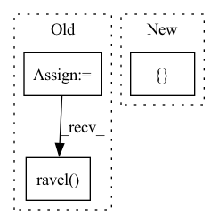

Pattern ID :33966
Before Change
self.Gamma = diag
self.p = p
self.q = q
self.B = Param((N, 1))
self.C = Param((1, N))
self.A = np.diag(self.Gamma) - self.p[:, np.newaxis] * self.q[np.newaxis, :].conj()
self.ssm = SSM(self.A, self.B, self.C)
self.discrete = discretizeSSM_bilinear(self.ssm, step)
self.Ct = (np.eye(N) - power(self.discrete.A, self.L)).conj().T @ self.discrete.C.ravel()
// self.Ct = self.discrete.C @ (np.eye(N) - power(self.discrete.A, self.L))
def K_gen(self):
return ssmGeneratingFn((self.Ct.conj().ravel(), self.q.conj().ravel()),After Change
self.A = np.diag(self.Gamma) - self.p[:, np.newaxis] * self.q[np.newaxis, :].conj()
self.step = step
self.N = N
self.set_params([ Param((N, 1)), Param((1, N))In pattern: SUPERPATTERN
Frequency: 3
Non-data size: 3
Instances Fragment ID: 97238635
Project Name: srush/annotated-s4
Commit Name: c83ea79dc3ead37679465cbed4e18a38c894ca59
Time: 2021-12-16
Author: srush.research@gmail.com
File Name: s4/s4.py
M Class Name: S4
N Class Name: S4
M Method Name: __init__(4)
N Method Name: __init__(4)
M Parent Class:
N Parent Class:
M File Name: s4/s4.py
N File Name: s4/s4.py
M Start Line: 124
M End Line: 142
N Start Line: 178
N End Line: 181
Before Change
// Some distance metrics
metrics = ["euclidean", "correlation", "cityblock"]
for metric in metrics:
pd_ = pdist(data, metric)
cd_ = CDist(pairwise_metric=metric)
assert_true(not cd_.is_trained)
cd_.train(ds[ds.sa.chunks == 0, ])
assert_true(cd_.is_trained)
res = cd_(ds[ds.sa.chunks == 1, ])
// Check to make sure the pdist results are close to CDist results
assert_array_almost_equal(res.samples.ravel(),
squareform(pd_)[:3, 3:].ravel() )
// check it doesn"t blow up without mean group samples
for metric in metrics:After Change
// Some distance metrics
metrics = ["euclidean", "correlation", "cityblock", "mahalanobis"]
VI_mahalanobis = np.eye(5)
for sattr in [[ "targets" Fragment ID: 97238638
Project Name: PyMVPA/PyMVPA
Commit Name: a243ad678a264c898e133bb1f97efed72703ee06
Time: 2016-10-02
Author: matteo.visconti.gr@dartmouth.edu
File Name: mvpa2/tests/test_rsa.py
M Class Name: AnonimousClass
N Class Name: AnonimousClass
M Method Name: test_CDist(0)
N Method Name: test_CDist(0)
M Parent Class:
N Parent Class:
M File Name: mvpa2/tests/test_rsa.py
N File Name: mvpa2/tests/test_rsa.py
M Start Line: 81
M End Line: 109
N Start Line: 81
N End Line: 105
Before Change
min_size = self.min_size * scale
// 计算高宽
ws = roi[:, 2] - roi[:, 0]
hs = roi[:, 3] - roi[:, 1]
// 防止建议框过小
keep = np.where((hs >= min_size) & (ws >= min_size))[0]
roi = roi[keep, :]
score = score[keep]
// 取出成绩最好的一些建议框
order = score.ravel() .argsort()[::-1]
if n_pre_nms > 0:
order = order[:n_pre_nms]
roi = roi[order, :]
After Change
// 防止建议框超出图像边缘
//-----------------------------------//
roi[:, [0, 2]] = torch.clamp(roi[:, [0, 2]], min = 0, max = img_size[1])
roi[:, [1, 3]] = torch.clamp(roi[:, [ 1, 3 Fragment ID: 97238670
Project Name: bubbliiiing/faster-rcnn-pytorch
Commit Name: d456f02a402fd8cf8db1d991aa612439b3c0ffb2
Time: 2021-01-30
Author: 47347516+bubbliiiing@users.noreply.github.com
File Name: nets/rpn.py
M Class Name: ProposalCreator
N Class Name: ProposalCreator
M Method Name: __call__(6)
N Method Name: __call__(6)
M Parent Class:
N Parent Class:
M File Name: nets/rpn.py
N File Name: nets/rpn.py
M Start Line: 43
M End Line: 69
N Start Line: 36
N End Line: 72